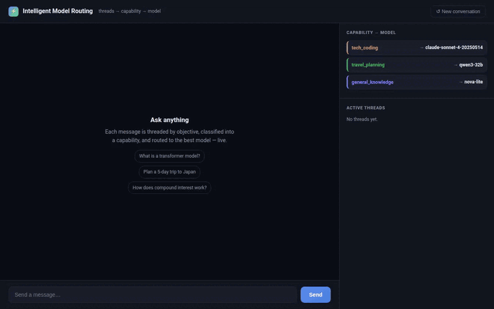

Cut LLM costs by routing the thread, not the message
Run your chatbot on one big model and you pay premium rates to answer "what's the capital of France." Run it on one small model and the genuinely hard questions come back wrong. The way out is to send each message to a model that fits it. In a long, winding conversation, that turns out to be harder than it sounds.
The idea is simple enough. Different questions suit different models. A quick factual question can go to a small, cheap model. A coding question is better off with a stronger one. Route each message to the right place and you stop overpaying for the easy stuff while still getting the hard stuff right.
What mostly decides the right model is the topic. Some models are better at code; others are cheaper and perfectly fine for everyday questions. Difficulty matters too, and I will come back to it, but topic does most of the work, so that is where we will start.
The problem shows up over a long chat
Routing one standalone message is easy. The trouble is that real conversations are full of messages that mean nothing on their own.
Read these the way the system first sees them, with no context:
- "yes, go ahead"
- "why?"
- "the second one"
What are they about? You cannot tell. "The second one" could be choosing a restaurant or choosing between two ways to lay out a spreadsheet. A short reply borrows its meaning entirely from whatever it is following. To route it, you first have to know what it continues.
The obvious patch is to just hand the model the whole conversation so it has context. But that runs into a second problem: people do not stay on one subject. They jump around. A normal session looks like this:
- "Help me plan a two-week trip to Japan."trip
- "My code keeps crashing and I can't figure out why."bug
- "Back to Japan, how many days in Tokyo?"trip
- "What can I make for dinner with chicken and rice?"dinner
- "Okay, why is it still crashing?"bug
Now look at that last message, "why is it still crashing?" To answer it well, the model needs the earlier coding turns and nothing else. The trip and the dinner are just noise around it. Dump the entire transcript into the prompt and you have buried the one part that matters under a pile of unrelated chatter. That extra text is not only expensive to process. It pulls the answer off course.
The hard part of a long conversation is not understanding one message. It is knowing which earlier messages it belongs with.
Think in threads, not one long transcript
The fix is to stop treating a conversation as one ever-growing list of messages. Treat it the way Slack treats a busy channel: as several threads sharing a timeline. Each thread is one line of intent, the trip, the bug, the dinner, and a message belongs to a thread, not to whatever was said most recently.
Once you see it that way, the two problems solve themselves together. Routing gets easy, because a thread has one steady topic, so you decide its model once instead of guessing at every "why?". And context gets easy, because each thread carries only its own history, so the model answering about the bug sees the bug and nothing else.
So the whole thing comes down to one question on every turn: which thread does this message belong to? Get that right and the model and the context both follow.
A conversation in motion
Here is the same user moving between two threads, then coming back to the first one much later. This is the live app: watch the right-hand panel as each message is sorted into a thread and routed to its model, and at the end each thread is opened to show it holds only its own turns.

| # | Message | Decision | Thread | Model |
|---|---|---|---|---|
| 0 | "Help me plan a two-week trip to Japan." | open thread | t0 | Qwen3-32B (travel) |
| 1 | "My code keeps crashing and I can't figure out why." | new thread | t1 | Claude Sonnet 4 (coding) |
| 2 | "How many days in Tokyo vs Kyoto?" | resume t0 | t0 | Qwen3-32B |
| 3 | "Okay, why is it still crashing?" | resume t1 | t1 | Claude Sonnet 4 |
| ... | (many turns on other things) | ... | ... | ... |
| 41 | "What's a realistic daily budget for the trip?" | resume t0 | t0 | Qwen3-32B |
Turn 2 lands on the travel thread even though the message right before it was about code. Turn 3 lands back on the coding thread. And turn 41 finds the travel thread again forty turns later, with nobody having typed "anyway, back to Japan." Every one of these is decided from the words alone. That last one, finding the right thread after a long gap with no announcement, is the part worth getting right.
Deciding the thread: resume or new
There is no "current thread" and no rule about which was most recent. On every turn, one small, cheap model is asked to place the message against all the open threads. It is shown three things.
- Each open thread, as a short summary. Its goal, plus a running scope: a growing list of everything that thread has touched. The model does not get each thread's full history. It gets this summary, which is enough to recognize the thread.
- The last few full turns of the chat. Both the question and the reply, the last three by default. These are only there to make sense of short replies like "yes" or "the second one."
- The new message. Just the question.
It answers with one of two things: resume an existing thread, or open a new one.
{"thread": "t0"} resume an existing thread
{"thread": "NEW", "objective": "plan trip"} open a new oneThere is one guardrail that matters more than it looks. A reply only counts as "resume" if it names a thread that actually exists. Anything else, a made-up id, a garbled reply, an error, simply opens a new thread. This is on purpose: the model can never misfile your message into the wrong thread by inventing one. The worst it can do is start a fresh thread, which the next turn quietly fixes.
Inside that, the model is told to prefer resuming, and a few plain rules do most of the work.
- Attach if the message fits a thread's goal or anything it has already covered. A trip thread already includes transport, lodging, food, and budget, so a budget question belongs to it, not to a new thread.
- A return after a gap belongs to the thread it returns to. Look at all open threads, including old ones. Do not start a new thread just because the match is old. This is what makes turn 41 work.
- Subject beats recency. The most recent thread gets no special treatment. Turn 2 goes back to the trip even though the coding message came right before it.
- Watch for look-alikes. "Fix my crashing app," "explain how neural networks learn," and "set up a website" all sound techy, but they are three different goals. Match on what the person actually wants, not on shared buzzwords.
Worth saying clearly: there is no "merge" step. Two threads are never combined. "Resume" just means attaching to a thread that already exists. And because the decision is made fresh every turn, nothing gets stuck. One misplaced message does not snowball, because the next message is judged on its own.
The model is picked once, then kept
When a new thread is created, a quick classifier reads its goal and files it under a topic: coding, travel, or a catch-all "general." That topic decides the model.
| Topic | Model | Why |
|---|---|---|
| coding | Claude Sonnet 4 | usually hard, worth the strong model |
| travel | Qwen3-32B | capable and mid-priced |
| general (default) | Nova Lite | mostly easy, cheapest |
This happens once, when the thread starts. Every later message in that thread keeps the same model. That matters: if you re-decided on every message, a short follow-up like "and the second one?" could get misread and bounce the thread to a different model mid-conversation, which feels jarring. Tying the model to the thread keeps it steady. Turns 0, 2, and 41 all go to the same travel model without anyone re-deciding.
This is also where difficulty quietly comes in. Notice the topics line up with how hard their questions tend to be: coding skews hard, general skews easy. So routing by topic already routes by difficulty most of the time. If you ever want a separate "how hard is this" signal, it slots in the same way, decided once per thread. But for most chatbots, topic alone gets you most of the savings.
One more thing: the behind-the-scenes steps, matching, classifying, summarizing, all run on the cheapest model. You only spend the strong model on the one thing the user actually reads, the answer.
Sending only the right context
Picking the right model is half the savings. The other half is what you put in the prompt.
The lazy default is to resend the entire conversation on every turn. In a long chat that is the biggest line on your bill, because you pay for all those words again and again, every single turn, and most of them have nothing to do with the current question. It also makes the answer worse, since the model has to fish the relevant part out of a wall of unrelated text.
Threads fix this directly. Once the thread is chosen, the answer is built from that thread's history alone. When turn 2 is answered, the travel model receives only the trip turns, plus a short summary of what the thread has covered:
system: You are a helpful travel assistant.
So far in this thread: <short summary of the trip discussion>
user: Help me plan a two-week trip to Japan. (turn 0)
assistant: <the trip reply>
user: How many days in Tokyo vs Kyoto? (the current turn)The coding message is simply not in there. It is not trimmed or shrunk, it is absent, because it belongs to a different thread. When turn 3 picks up the coding thread, that model sees the crashing-code turns and never hears about Japan. Each model gets a clean, on-topic, much smaller prompt. The answer gets better and the prompt gets cheaper at the same time, which is the rare case where the quality win and the cost win are the same move.
Why the summary keeps everything
After each answer, the thread's running summary is updated with the new exchange, and it is told never to drop older items. Over time it becomes a short but complete record of what the thread has covered: "Japan trip: two weeks, Tokyo and Kyoto, rail pass, daily budget."
This is the quiet workhorse of the whole design. That summary is exactly what the system compares new messages against, so keeping it complete is what lets turn 41 find its way home. If the summary instead drifted toward only the latest sub-topic, it would slowly forget the early trip details, and the budget question forty turns later would look like a stranger. Keep everything, and old parts of a thread stay findable for as long as the conversation lasts.
What this does not solve
The thread decision is itself a model call, so it is neither free nor perfect. A wrong guess sends a message to a slightly-off context or a non-ideal model. That is a small quality dip, not an outage, and the next turn can correct it. The design counts on that rather than pretending the classifier is always right.
It is also not a way to handle more traffic. Sending easy questions to cheaper models lowers your average cost per answer, but it does not raise how much your models can serve overall. It makes spending efficient. It does not create capacity.
And the topics are yours to define. Which topics exist, how they are described, and which model each one uses are all settings, not fixed rules. Get them wrong and you will send good threads to the wrong model. The approach is general; the choices for your own product are not.
The shift is small to describe and changes the whole bill. Stop treating a conversation as one long transcript tied to one model. Treat it as a set of threads, each with its own topic, its own model, and its own private history. Then every turn is just one cheap question, which thread is this, and the right model and the right context both fall out of the answer.
The full implementation, the thread matcher, the running summary, the topic routing, and the streaming server behind it, lives in the intelligent-model-router repository.